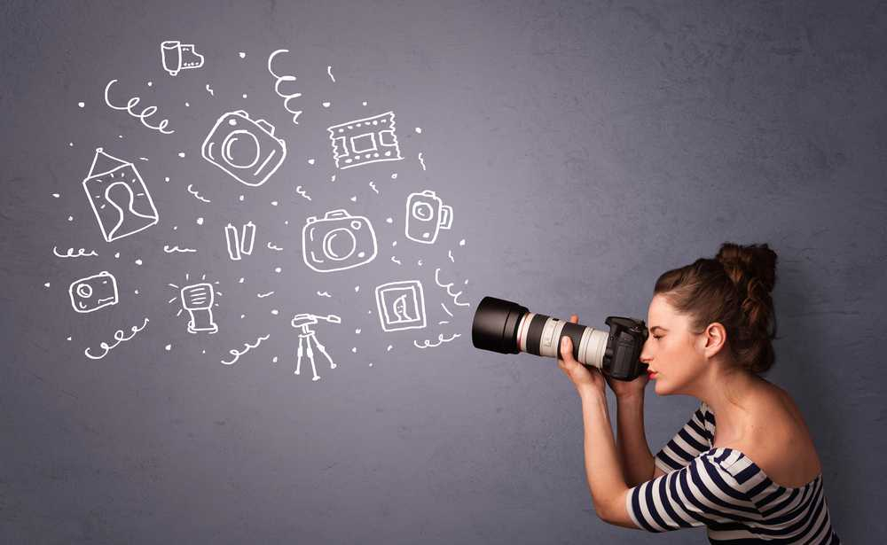

ФОТОГРАФИЯ
Фотогра́фия — технология записи изображения путём регистрации оптических излучений с помощью светочувствительного фотоматериала или полупроводникового преобразователя. В отличие от некоторых других языков, в русском слово «фотография» используется только применительно к статичным изображениям. В то же время в профессиональном кинематографе этот термин обозначает изобразительное решение фильма, создаваемое кинооператором. Фотографиями также называются конечные отпечатки фотографического изображения, изготовленные на фотобумаге химическим способом или принтером.
Типы фотосъёмок:
- Архитектурная съемка
- Пейзажная съемка
- Портретная съемка
- Репортажная фотография
- Спортивная фотография
- Парная фотография/Love story